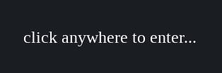
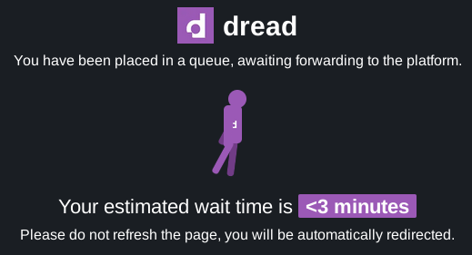
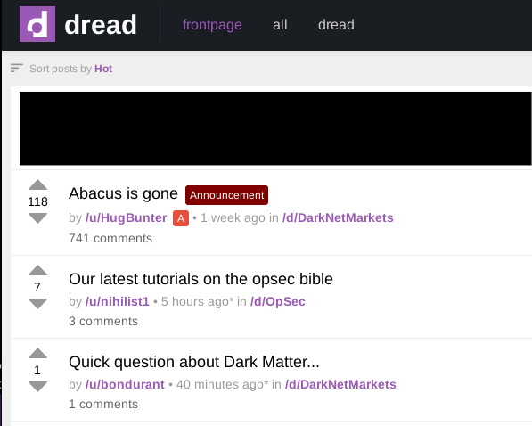
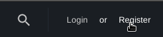
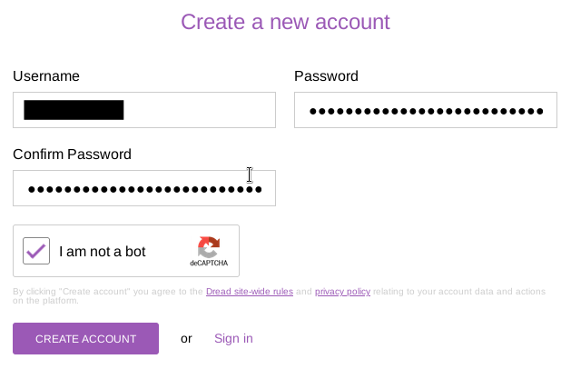
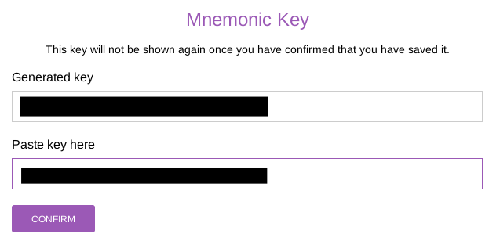
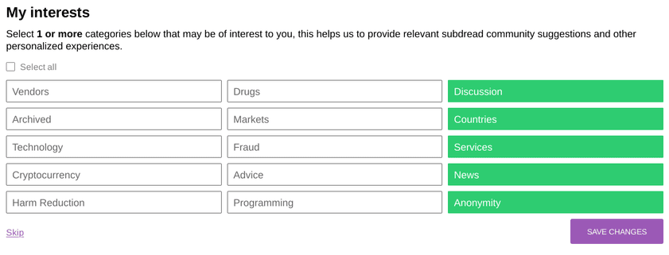
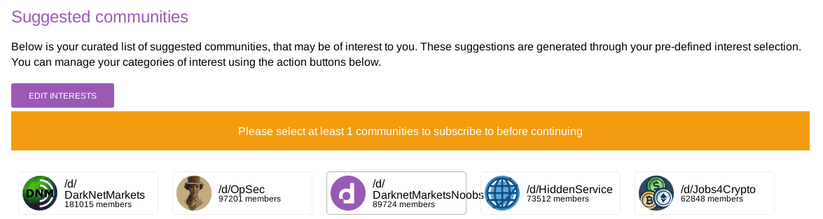
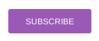
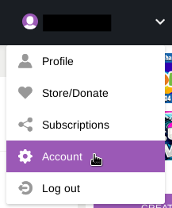

How to access Dread - The largest darkweb forum
July 12, 2025
Dread is one of (If not the) largest darkweb forums. It features many discussions about the darkweb and online privacy, is very similar to reddit in how it is used.
First to get on to Dread, you need to download and Install Tor Browser
Once done, or if you already have installed Tor browser, you can copy and paste Dreads onion link dreadytofatroptsdj6io7l3xptbet6onoyno2yv7jicoxknyazubrad.onion
You will be greeted by this, simply just click anywhere to continue.
After clicking it will make you wait, with a time estimate. This usually takes like 10 secs.
After that you will be thrown into Dread! You will see the homepage, you are now on Dread and the next instructions will teach you how to create an account.
To create an account click register in the top right.
It wil take you to a registration page, enter in a username, password, and do the captcha (Click rotate until the image is right side up)
It will then say your account was successfully created, it will now show you your mnemonic key, save this to a text file or something, paste it in the 2nd box, and confirm.
Next, it will ask you for your interests to give you recommended posts, select some then continue.
If will then ask you to subscribe to some sub Dreads for homepage recommendations, select some then press subscribe at the bottom.
 And thats it! You have created a Dread account and can read, upvote, comment, and create posts (Creating a post is on the right of every sub Dread when you open it).
You can edit your account settings (Adding a pgp key, changing password, etc) by clicking on your profile in the top right, and selecting 'Account'.
